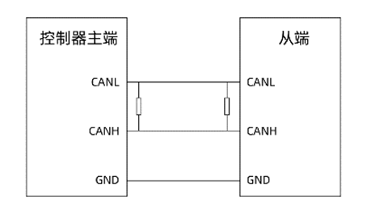
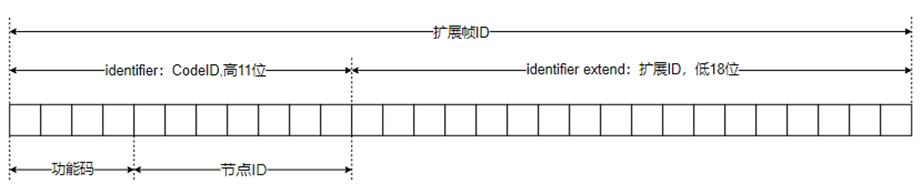

|
类型 |
系统指令 | ||||||||||
|
描述 |
直接通过CAN总线收发数据。
可以实现多个控制器通过CAN来通讯，但是同一个CAN网络上只能有一个主端(CANIO_ADDRESS=32)。 较新的固件版本才支持这个功能，如不支持请联系厂家。
接线如下图所示：  CANL - CANL CANH - CANH CANL和CANH的首尾两端分别连接1个120欧电阻用于阻抗匹配。控制器主端CANL和CANH接口并联1个120欧电阻；连接带拨码开关的扩展模块时，将拨码第八位拨为ON即表示接入120欧电阻，无需额外接电阻。 | ||||||||||
|
语法 |
CAN(channel, function, tablenum) channel：CAN通道，0表示第一个通道，-1表示缺省通道 function：功能号
tablenum：数据存储的TABLE位置
6、7模式时依次存储： identifier：Can通讯对象(Cob-Id)，11位，前4位是功能码，后7位是节点ID，ZCAN使用的高位数据预留，建议0-511。接收时如果小于0则表明没有收到数据。bit11表示是否远程帧。 bytes：数据区域字节数，最多为8。 data：数据区域，字节（0-FF）。
16、17模式时依次存储： identifier：Can通讯对象(Cob-Id)，11位，前4位是功能码，后7位是节点ID，ZCAN使用的高位数据预留，建议0-511。接收时如果小于0则表明没有收到数据。bit11表示是否远程帧。 identifier extend：扩展id，增加高11位与低18位，共同组成CAN的29位ID，不存在填-1。 bytes：数据区域字节数，最多为8。 data：数据区域，字节（0-FF）。
29位扩展帧ID从右最后一位开始拆分为低18位和高11位，高位不足11位自动补0，例子如下：  扩展帧ID值：1753001 对应二进制为：1 0111 0101 0011 0000 0000 0001 对应29位二进制：0 0001 0111 0101 0011 0000 0000 0001 高11位为：0 0001 0111 01，对应10进制为93 低18位为：01 0011 0000 0000 0001，对应10进制为77825 所以使用CAN17模式时，identifier=93，Identifier extend=77825 | ||||||||||
|
适用控制器 |
通用 | ||||||||||
|
例子 |
例一 '发送端： TABLE(0,1,8,1,2,3,4,5,6,7,8) '发送cobid=1，8个字节，依次为1-8 CAN(0,7,0) '发送
'接收端： CANIO_ADDRESS=1 '设置为非主控，此参数设置一次即可 CAN(0,6,0) '接收 ?TABLE(0)
例二 '发送端 TABLE(0,1,10,8,1,2,3,4,5,6,7,8) '发送cobid=1，扩展id10，8个字节，依次'为1-8 CAN(0,17,0) '发送
'接收端： CANIO_ADDRESS=1 '设置为非主控，此参数设置一次即可 CAN(0,16,0) '接收 ?TABLE(0)
例三 CAN17模式防阻塞，独立任务启动 当未连接通讯设备是CAN17会自动跳过，不会发生阻塞等待 CANIO_ADDRESS = 32 '主端 GLOBAL FLAG_SEND_NUM '发送次数 FLAG_SEND_NUM = 1000
WHILE 1 ?FLAG_SEND_NUM IF FLAG_SEND_NUM > 0 THEN TABLE(0,32,8,8,1,2,3,4,5,6,7,8) STOPTASK 2 RUNTASK 2,CAN_SEND WA 10 '稍微增加延时，确保后续发送进行时不会打断前面的发送 ENDIF IF FLAG_SEND_NUM <= 0 THEN ?"发送完毕" EXIT WHILE ENDIF WEND END
GLOBAL SUB CAN_SEND() FLAG_SEND_NUM = FLAG_SEND_NUM - 1 CAN(0,17,0) ?"发送成功" END SUB
| ||||||||||
|
相关指令 |